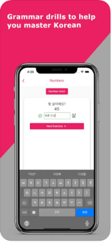

Languages, coding, food, coffee, and beer in that order are the things I'm most into. Originally from Guatemala and brought to the
US as a young child, I grew up in Portland, Oregon and pretty much absorbed all the hippy concepts that the culture in Portland has
become known for. I love languages and currently am able to speak English, Spanish, French, and Japanese fluently. I am also working
on Korean and SerboCroatian, hence the mobile apps you can view below that are for learning these two languages.
My Apps
Navika
Navika is my most developed app and it's main goal is to get users familiarized with the difficult grammar points
of the Serbo-Croation family, which includes Croatian, Serbian, Bosnian, and Montenegrin. Users can practice concepts such as
declension, verb conjugations, cyrillic, and more.
HanDrills

HanDrills is a spin-off of Navika, and it's aim is the familiarize the user with the most difficults grammar points of the Korean
language. Users can practice difficult concepts such as using native and sino korean numbers, verb conjugations, indirect quoting,
among others.